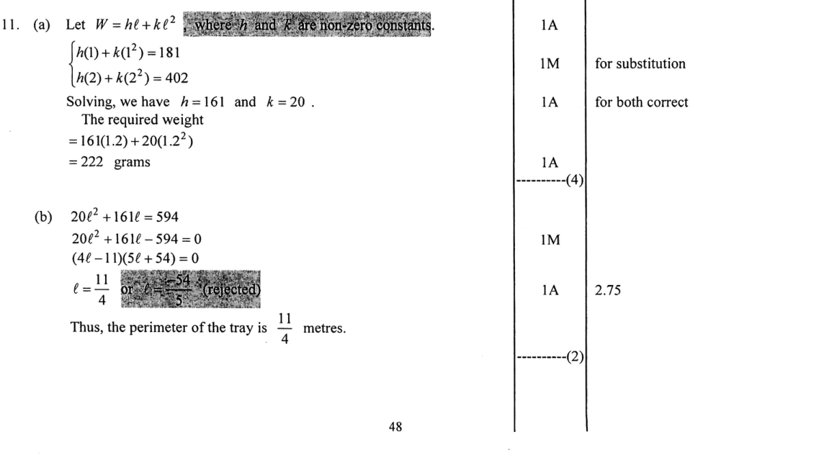

2013 DSE 數學 P1 Q11 答案＋詳解
題目（中文卷）
一周界為 $l$ 米的托盤的重量為 $W$ 克。已知 $W$ 爲兩部分之和，一部分隨 $l$ 正變，另一部分隨 $l^2$ 正變。當 $l=1$ 時，$W=181$；且當 $l=2$ 時，$W=402$。
(a) 求一周界為 1.2 米的托盤的重量。 (4 分)
(b) 若一托盤的重量為 594 克，求該托盤的周界。 (2 分)
English version（英文卷題目）
The weight of a tray of perimeter $\ell$ metres is $W$ grams. It is given that $W$ is the sum of two parts, one part varies directly as $\ell$ and the other part varies directly as $\ell^2$. When $\ell=1$, $W=181$ and when $\ell=2$, $W=402$.
(a) Find the weight of a tray of perimeter 1.2 metres. (4 marks)
(b) If the weight of a tray is 594 grams, find the perimeter of the tray. (2 marks)
官方評卷參考（Marking Scheme）

考評報告
（a）甚佳。大部分考生能得出托盤的正確重量。 （b）甚佳。大部分考生能得出托盤的正確周界。